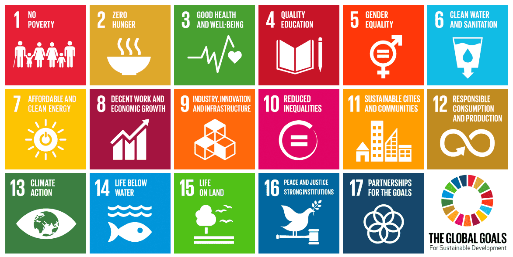

About this project
เว็บไซต์นี้ถูกเขียนขึ้นมาเนื่องจากโปรเจกต์ของวิชา Joy of sharing ที่กำลังศึกษาเกี่ยวกับเป้าหมายการพัฒนาที่ยั่งยืน (Sustainable Development Goals–SDGs) ผู้เขียนจึงเกิดความตั้งใจอยากจะเป็นส่วนหนึ่งในการพัฒนาเพื่อให้บรรลุเป้าหมาย โดยส่วนตัวมีความสนใจที่อยากจะรณรงค์ในเรื่องปัญหาของ Fast Fashion ซึ่งส่งผลกระทบ โดยตรงกับสิ่งแวดล้อมอยู่แล้ว จึงอยากใช้พื้นที่นี้ในการรณรงค์ให้ทุกคนตระหนักถึงปัญหาของ Fast Fashion ทำความรู้จักว่า Fast Fashion คืออะไร ทำไมถึงไม่ดี และทำไมเราถึงต้องเลี่ยง ผู้เขียนหวังว่าเว็บไซต์นี้จะมีประโยชน์ไม่มากก็น้อย และถ้ามีข้อผิดพลาดประการใด ต้องขออภัยไว้ ณ ที่นี้ด้วย

Getting to know the SDGs
SDGs (Sustainable Development Goals) หมายถึง การจัดทำเป้าหมายการพัฒนาที่ยั่งยืน เริ่มต้นจากการประชุมสหประชาชาติ ครั้งที่ 2 ณ กรุงริโอ เดอ จาเนโร ประเทศบราซิล ในปี 1992 ประเทศสมาชิกต่าง ๆ ประชุมร่วมกันในหัวข้อว่าด้วยสิ่งแวดล้อมและการพัฒนา (Environment and Development) เพื่อเป็นแผนแม่บทของโลกสำหรับการดำเนินงานที่จะทำให้เกิดการพัฒนาอย่างยั่งยืนทั้งในด้านสังคม เศรษฐกิจ และสิ่งแวดล้อม
What is Fast Fashion?
Fast Fashion คือ เสื้อผ้าหรือสินค้าแฟชั่นตามเทรนด์ที่ผลิตขึ้นมาอย่างรวดเร็วเป็นจำนวนมาก อาจเลียนแบบดีไซน์จากโชว์ในรันเวย์ ในขณะที่ผู้ซื้อมีความต้องการซื้อมาก ๆ เน้นใส่ไม่กี่ครั้งก็ทิ้งแล้วไปซื้อตัวใหม่แทน ดังนั้นกระบวนการผลิตจึงจำเป็นต้องกดต้นทุนให้ต่ำลง ทั้งคุณภาพของวัสดุและแรงงาน นำไปสู่การเอารัดเอาเปรียบมนุษย์ที่ร้ายแรง และบางครั้งจบลงที่โศกนาฏกรรม ก่อให้เกิดปัญหาด้านสิ่งแวดล้อมและจริยธรรมตามมามากมาย
การผลิตสินค้าจำนวนมากในเวลาอันสั้น (mass product) ทิ้ง carbon footprint ปริมาณมหาศาล เกิดขยะจากกระบวนการผลิตและเสื้อผ้าที่ถูกทิ้งหลังจากใส่ไม่กี่ครั้ง น้ำปนเปื้อนสารพิษกว่า 3,500 ชนิดถูกปล่อยสู่สิ่งแวดล้อม ใยสังเคราะห์หลุดจากเสื้อผ้าระหว่างซักกลายเป็นพลาสติกขนาดเล็กลงสู่แหล่งน้ำ
รู้หรือไม่ ทุก ๆ ปีมีเสื้อผ้ากองมหึมาถูกทิ้งที่หลุมฝังกลบ บางส่วนยังไม่เคยถูกใช้งาน บางส่วนถูกใช้แค่ครั้งเดียว และบางส่วนเป็นขยะตั้งแต่กระบวนการผลิต
ผลกระทบไม่ได้จบแค่สิ่งแวดล้อม มีการเอารัดเอาเปรียบแรงงาน ใช้แรงงานเด็ก ให้ค่าแรงต่ำกว่าค่าแรงขั้นต่ำ บังกลาเทศ เป็นฐานการผลิตเสื้อผ้าที่มีค่าแรงถูกที่สุดในโลก คนงานตัดเย็บเสื้อผ้าได้รับค่าจ้างขั้นต่ำเดือนละ 38 ดอลลาร์ หรือ ประมาณ 1,140 บาท ซึ่งไม่เพียงพอต่อการยังชีพ ต้องทำงานล่วงเวลาอีกอย่างน้อยวันละ 2 ชั่วโมง จึงจะมีรายได้เพียงพอต่อค่าใช้จ่ายที่จำเป็นในชีวิตประจำวัน
มีคนจำนวนมากถูกกดขี่จากนายทุนอย่างไม่เป็นธรรมในขณะที่เรามีเสื้อผ้าสวย ๆ มากมายให้เลือกซื้อ
The ways to avoid Fast Fashion
สำหรับอุตสาหกรรมแฟชั่นที่เล็งเห็นปัญหาดังกล่าวและพยายามแก้ไข อาจเลือกนำเสนอสินค้าในรูปแบบคอลเลกชั่นที่ "Sustainable" แต่เราในฐานะผู้บริโภค สามารถร่วมกันผลักดันสร้างความเปลี่ยนแปลงได้ ยังมีอีกหลายทางเลือกมากมายที่ทำให้เราสามารถสนุกกับการแต่งตัว โดยเป็นมิตรต่อสิ่งแวดล้อมและไม่สนับสนุนการกระทำที่ผิดหลักจริยธรรม
My personal challenge
จุดเริ่มต้นเล็ก ๆ ของผู้เขียนคือการ Challenge ตัวเองว่าจะงดซื้อเสื้อผ้าจนกว่าจะปีใหม่ ซึ่งได้เริ่มทำ Challenge นี้มาตั้งแต่วันที่ 28 กรกฎาคม 2563
Challenge completed